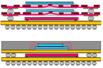

Package-on-Package
(POP)
Package-on-Package
(POP),
as its name implies,
is a semiconductor packaging innovation that involves the stacking of
two or more packages on top of one another. Signals are routed
between the packages through standard package interfaces.
Obviously, one advantage of this vertical combination of different
packages is board space savings. POP is a good packaging solution
for applications that require more features in less space, such as
digital cameras, PDA's, MP3 players, and mobile gaming devices.
POP assemblies
today usually consist of just two packages, such as a memory device
mounted on top of a logic device. Most companies that are developing POP
assembly capabilities are leveraging well-established assembly processes
and infrastructure (such as those used in CSP, BGA and flip-chips), so
that little or no development will be required for the top package.
The bottom or base package may likewise employ die stacking in order to
allow the combination of analog functionality or flash memory to the
logic chip.

Figure 1.
Examples of Package-on-Package (POP) Structures
source of
original images:
www.akita-elec.co.jp
According to
Amkor's website, POP is an enabling technology that offers the following
benefits: 1) it provides OEM's and EMS with a platform for
effective 3-D integration of logic and memory; 2) it simplifies
the business logistics of stacking; 3) it allows integration control at
the system level, thereby facilitating the optimization of stack
combinations; 4) it eliminates margin stacking and expands technology
reuse; 5) it helps mitigate the impact of high costs usually associated
with multimedia processing; and 6) it makes mass customization of
systems for various usage requirements possible. Figure 1 shows an
example of a package-on-package (POP) structure.
As of this
writing (2006), the top package of a typical POP may have an I/O
interface consisting of hundreds of pins, with an I/O pitch of 0.65 mm.
The industry may soon move to 0.5 mm pitch though. The bottom
package of a typical POP employs a finer I/O pitch, i.e., it currently
uses a pitch of 0.5 mm that may soon be replaced by a 0.4 mm pitch.
Wafer thinning is an essential part of POP assembly, in order to make up
for the increased height requirements of vertical integration. POP
package heights of 1.2 mm to 1.6 mm are now available in the industry in
various configurations.
See Also:
CSP;
Ball Grid Array;
Flip Chip; Die Stacking
HOME
Copyright
©
2005
www.EESemi.com.
All Rights Reserved.